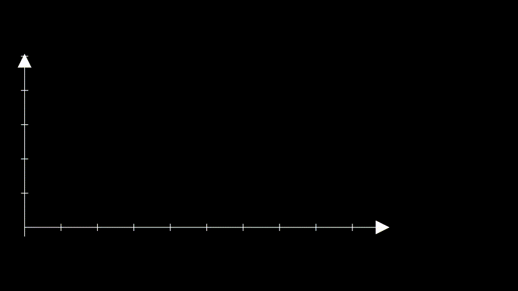

Stationarity#
In this section we will cover
Definition of stationarity and examples of common stationary and nonstationary time series.
How to detect stationarity.
The most common ways to transform nonstationary time series into stationary ones.
---------------------------------------------------------------------------
ModuleNotFoundError Traceback (most recent call last)
Cell In[1], line 6
4 import requests
5 import numpy as np
----> 6 import matplotlib.pyplot as plt
7 import pandas as pd
8 from scipy.integrate import quad
ModuleNotFoundError: No module named 'matplotlib'
Why do we care about stationarity?#
Stationarity is a key assumption to time series analysis.
Without it many basic time series models would break.
Transformations can be applied to convert a nonstationary time series to a stationary one.
What is stationarity?#
Intuition: a time series is stationary when there are no changes in the underlying system that generates it.
We define it to be:
Constant mean (no trend).
Constant variance (no heteroskedasticity).
Constant autocorrelation structure.
No periodic component.
Let’s create an utility function to make plots.
def run_sequence_plot(x, y, title, xlabel="Time", ylabel="Values", ax=None):
if ax is None:
_, ax = plt.subplots(1,1, figsize=(10, 3.5))
ax.plot(x, y, 'k-')
ax.set_title(title)
ax.set_xlabel(xlabel)
ax.set_ylabel(ylabel)
ax.grid(alpha=0.3)
return ax
First, we create a variable
timethat defines equally-spaced time intervals.Then we’ll sample values from a Normal distribution with a mean of 0 and a standard deviation of 1.
Essentially we’re creating white noise, which is a stationary time series as it exhibits all the properties required of a stationary time series.
T = 200
time = np.arange(T)
stationary = np.random.normal(loc=0, scale=1.0, size=(T))
ax = run_sequence_plot(time, stationary, title="Stationary TS")
ax.plot(time, np.ones_like(time)*np.mean(stationary), linewidth=2, color='tab:red', label='Mean');
ax.fill_between(time, np.ones_like(time)*(stationary.mean()-1.96*stationary.std()),
np.ones_like(time)*(stationary.mean()+1.96*stationary.std()),
color='tab:red', alpha=0.2, label='std')
plt.legend();
We can easily check that the white noise has constant mean, constant variance, and no periodicity.
What about the autocorrelation?
Autocorrelation#
Autocorrelation measures how much the current time series measurement is correlated with a past measurement.
For example, today’s temperature is often highly correlated with yesterday’s temperature.
To discuss these things we must introduce the idea of a lag, i.e., a delay.
Say you wanted to know if today’s temperature correlates more with yesterday’s temperature or the temperature from two days ago.
You could test this by computing the correlation between the original time series and the same series delayed 1 time step.
The second value of the original time series would be compared with the first of the delayed time series.
The third original value would be compared with the second of the delayed.
And so on.
Autocorrelation often results in a pattern, whereas a time series without autocorrelation looks random.
Example: constant autocorrelation
Time series of daily temperature in a specific location over a year.
If this location has a very stable climate, the day-to-day changes in temperature might be minimal and consistent throughout the year.
Then, the autocorrelation would be relatively constant.
E.g., the correlation between today’s temperature and tomorrow’s temperature is roughly the same as the correlation between the temperature 30 days ago and 29 days ago.
Example: time-varying autocorrelation
Time series representing the daily stock prices of a particular company.
Stock prices can be influenced by market trends, company performance, economic indicators, world events, etc…
Here, the autocorrelation might be time-dependent.
E.g., during a period of market stability, the stock prices might show a consistent pattern over time (e.g., a steady increase).
However, during a market upheaval or a significant company event (like a product launch or a scandal), the pattern could change dramatically.
Common stationary and nonstationary time series#
If the analytic expression of the time series is known, it is possible to check the conditions for stationarity.
In practice, the process generating the time series might be unknown and we’ll need other tools to check stationarity.
Starting the analysis by looking at the
run_sequence_plotis an excellent starting point.
White noise#
We already looked at this time series and conclude that mean and variance are constant and there is no seasonal component.
In addition, since the value of each time step is drawn independently, there is no correlation.
run_sequence_plot(time, stationary, title="White noise");
Random walk#
The random walk is one of the most important nonstationary time series.
It is defined as:
where \(\epsilon_t\) are the steps and sampled randomly.
Let’s create a random walk.
seed = 4
rand_walk = np.empty_like(time, dtype='float')
for t in time:
rand_walk[t] = seed + np.random.normal(loc=0, scale=2.5, size=1)[0]
seed = rand_walk[t]
run_sequence_plot(time, rand_walk, title="Random Walk");
Notice how the current value is highly correlated with the past values and fluctuates much less than the white noise.
The random walk is nonstationary.
Time series with trend#
Consider the following data.
trend = (time * 2.75) + stationary
run_sequence_plot(time, trend, title="Nonstationary data with trend");
Is this data stationary?
No, the mean changes over time (i.e. there is a trend)
Time series with seasonality#
seasonality = 10 + np.sin(2*np.pi*time/24)*10
run_sequence_plot(time, seasonality, title="Time series with seasonality");
Is this time series stationary?
The mean of a periodic signal over a complete cycle always assumes the same value (
10in our case).However, over an half-cycle or any period not equal to an integer multiple of the full cycle, the mean changes (is different from
10).This indicates that the mean is not constant over time
Detecting stationarity#
Next, we will talk about some techniques used to identify if a time series is stationary or not.
Specifically, we will focus on the Augmented Dickey-Fuller Test.
Augmented Dickey-Fuller Test#
This is a statistical procedure to determine whether a time series is stationary or not.
We will discuss more details about the test in the next lectures.
For now, that’s what we need to know:
Null hypothesis: \(H_0\): the series is nonstationary.
Alternative hypothesis: \(H_A\): the series is stationary.
Like any statistical test you should set a significance level or threshold that determines whether you should accept or reject the null.
The values \(\alpha=0.05\) or \(\alpha=0.01\), which yield a confidence of \(95\%\) and \(99\%\), respectively, are common choices.
Example: \(p = 0.0001 \rightarrow\) reject \(H_0 \rightarrow\) the time series is stationary
Example: \(p = 0.43 \rightarrow\) fail to reject \(H_0 \rightarrow\) the time series is non-stationary
Stationary Data & ADF#
Let’s see how to run this test in Python.
adf, pvalue, usedlag, nobs, critical_values, icbest = adfuller(stationary)
Let’s see and comment the main outputs from the ADF test.
print(f"ADF: {adf:.2f}")
ADF: -14.74
First,
adfis the value of the test statistic.The more negative the value, the more confident we can be that the series is stationary.
Here we see a negative value.
That may not mean anything to you just yet but
pvalueshould.
print(f"p-value: {pvalue}")
p-value: 2.543125112212854e-27
The
pvalueis interpreted like any p-value.The
pvalueshould be compared with the confidence levels (e.g., \(\alpha=0.05\) or \(\alpha=0.01\)).Based on the comparison, we reject or fail to reject \(H_0\).
Here
pvalueis very close to zero so we reject the \(H_0\) in favor of \(H_A\) and conclude that the time series is stationary.
print(f"nobs: {nobs}")
nobs: 199
The variable
nobsis simply the number of observations in the time series.
print(f"critical values: {critical_values}")
critical values: {'1%': np.float64(-3.4636447617687436), '5%': np.float64(-2.8761761179270766), '10%': np.float64(-2.57457158581854)}
Finally,
critical_valuesare the test statistic thresholds for common significant levels.Here we see a test statistic lower than -2.87 is sufficient to reject \(H_0\) at a significance level of 5%.
You may have noticed two outputs we didn’t discuss.
See statsmodels docs for a description of
usedlagandicbest.
ADF on time series with trend#
Next, we run the ADF test on the
trendtime series.
adf, pvalue, usedlag, nobs, critical_values, icbest = adfuller(trend, regression='c')
print(f"ADF: {adf:.2f}")
print(f"p-value: {pvalue:.3f}")
print(f"critical values: {critical_values}")
ADF: 0.10
p-value: 0.966
critical values: {'1%': np.float64(-3.4654311561944873), '5%': np.float64(-2.8769570530458792), '10%': np.float64(-2.574988319755886)}
As expected, we fail to reject \(H_0\) that the
trendtime series is nonstationary.
ADF on random walk#
Finally, we run the ADF test on the
rand_walktime series.
adf, pvalue, usedlag, nobs, critical_values, icbest = adfuller(rand_walk, regression='c')
print(f"ADF: {adf:.2f}")
print(f"p-value: {pvalue:.3f}")
print(f"critical values: {critical_values}")
ADF: -2.43
p-value: 0.134
critical values: {'1%': np.float64(-3.4638151713286316), '5%': np.float64(-2.876250632135043), '10%': np.float64(-2.574611347821651)}
As we discussed before, the random walk is nonstationary because its variance \(\sigma^2t\) is not constant over time.
Common transformations to achieve stationarity#
There are several ways to transform nonstationary time series data:
Transformation |
Effect |
|---|---|
Subtract trend |
Constant mean |
Apply log |
Constant variance |
Differencing |
Remove autocorrelation |
Seasonal differencing |
Remove periodic component |
Sometimes you’ll have to do multiple transformations on the same dataset.
Note that this is just a small subset of the total possible ways to transform nonstationary time series.
We’ll focus on subtracting the trend and seasonal differencing for now
Subtract estimated trend & seasonality#
trend_seasonality = trend + seasonality
run_sequence_plot(time, trend_seasonality, title="Time series with trend and seasonality");
adf_b4, pvalue_b4, _, _, _, _ = adfuller(trend_seasonality)
print(f"ADF: {adf_b4:.2f}")
print(f"p-value: {pvalue_b4:.3f}")
ADF: -0.28
p-value: 0.929
Nonstationary as expected.
Next, we apply the decomposition.
ss_decomposition = seasonal_decompose(x=trend_seasonality, model='additive', period=24)
est_trend = ss_decomposition.trend
est_seasonal = ss_decomposition.seasonal
est_noise = ss_decomposition.resid
run_sequence_plot(time, est_trend, title="Trend", ylabel="series");
run_sequence_plot(time, est_seasonal, title="Seasonality", ylabel="series");
run_sequence_plot(time, est_noise, title="Noise", ylabel="series");
Let’s look at the residual values.
print(est_residual[:20])
print('...')
print(est_residual[-20:])
[ nan nan nan nan nan nan
nan nan nan nan nan nan
0.27211609 -1.19594945 -0.50444018 -0.50638219 -0.51225125 -0.16578987
-0.75150172 -0.88957711]
...
[ 0.44755405 -0.36391449 -0.11867315 0.16158118 -0.13943343 -0.1707093
0.18690891 0.02980826 nan nan nan nan
nan nan nan nan nan nan
nan nan]
We’ll have to remove the first \(12\) and last \(12\) values to run an ADF test since those are
nan.The number 12 is due to the fact that the method applies seasonal differencing and we specified
period=24.Here’s how to do that and run the test all in one call.
adf_after, pvalue_after, _, _, _, _ = adfuller(est_noise[12:-12])
print(f"ADF: {adf_after:.2f}")
print(f"p-value: {pvalue_after:.3f}")
ADF: -6.19
p-value: 0.000
Now the time series is stationary
Seasonal differentiation#
Consider a time series with a seasonality of period \(L\).
There will be a strong correlation between \(X(t)\) and \(X(t+L)\).
Seasonal differentiation can remove the seasonality and make the time series stationary:
After seasonal differencing the time series will become \(L\) steps shorter.
Note that we can perform the standard differentiation in cascade to seasonal differentiation if we need to remove also the trend on top of the seasonality.
Let’s see this on the
trend_seasonalitytime series.

trend_seasonality_d24 = (trend_seasonality[:-24]
- trend_seasonality[24:]) # remove seasonality
trend_seasonality_d24_d1 = (trend_seasonality_d24[:-1]
- trend_seasonality_d24[1:]) # remove trend
# Plot the differenced time series
run_sequence_plot(time[:-25], trend_seasonality_d24_d1, title="Seasonal + 1st order differencing");
Summary#
In this lecture we learned:
What does it mean for a time series to be stationary.
A set of notable stationary and nonstationary time series.
Common tools to identify stationarity.
Useful nonstationary-to-stationary transformations.
# TODO: Exercises